Generating SLD styles with QGIS¶
QGIS includes a sophisticated style editor with many map rendering possibilities. Styles generated with QGIS can then be exported (with limitations) to SLD for usage with GeoServer.
QGIS style exporting abilities have been evolving over time, as a reference:
For vector data QGIS exports SLD 1.1 styles that can be read by GeoServer. In order to get the suitable results it’s important to use QGIS 3.0 or newer, and GeoServer 2.13.x or newer.
Raster data styling export is new in QGIS 3.4.5 (yet to be released at the time of writing). This new version exports SLD 1.0 styles with vendor extensions to support constrast streching that most recent GeoServer versions support properly. For older QGIS versions limited export functionality is available using the SLD4Raster plugin.
For the export it is advised to use the Save As functionality available in the style dialog, as indicated below in this guide. Other plugins exist that streamline the export process, but they may ruin the style trying to adapt it to older GeoServer versions (e.g., translating it down to SLD 1.0 by simple text processing means), or rewrite it entirely.
Warning
Despite the progress in the last years, it is known that not all QGIS rendering options are supported by SLD and/or by GeoServer (e.g. shapeburst symbology), and that support for exporting some parts is simply missing (e.g.. expression based symbology is supported in SLD, but QGIS won’t export it). If you are interested, both projects would welcome sponsoring to improve the situation.
Exporting vector symbology¶
This is a step by step guide to style a GeoServer demo layer, sfdem.
Open QGIS (minimum version 3.0)
Load the
states.shpdataset from the GeoServer data directory,<GEOSERVER_DATA_DIR>/data/shapefiles/states.shpDouble click the layer to open the Properties dialog and switch to the Symbology page.
Choose a Graduated rendering, on the
PERSONScolumn, and click on Classify button to generate 1.5 standard deviations, select the spectral color ramp, switch mode to Quantile and finally and click on the “Classify button to generate a 5 classes map, as shown in figure.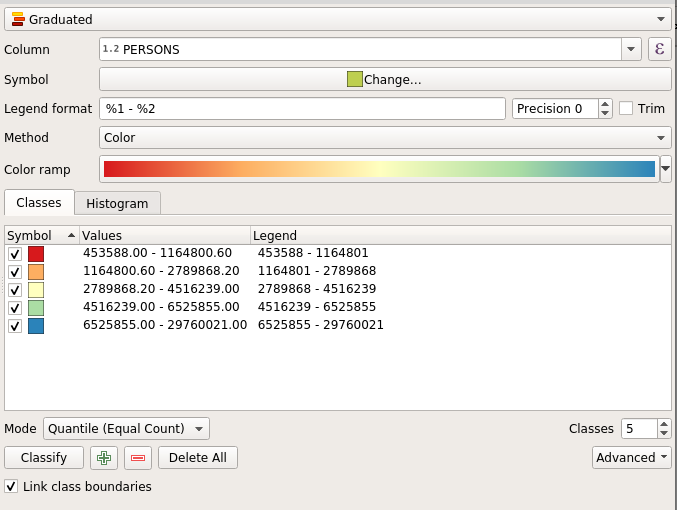QGIS vector styling¶
Switch to the Labels page, choose Single labels`, label with the
STATE NAMEattribute and choose your preferred text rendering options, as shown in figure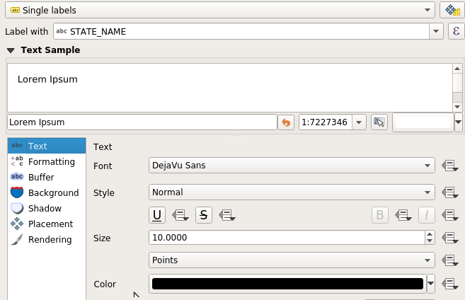QGIS labelling¶
The layer renders as follows:
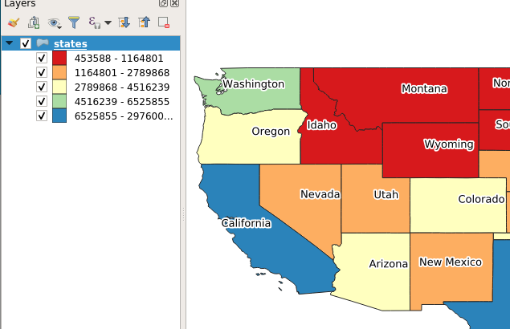QGIS raster styling¶
Go back At the Properties dialog, from the bottom of the Styles page, choose .
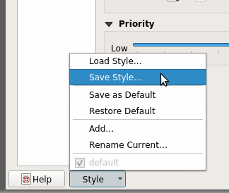Export using Save As…¶
Choose export in the SLD format, placing the file in the desired location.
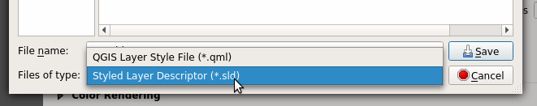Choosing export format…¶
Go in GeoServer, create a new style, use the Upload a new style dialog to choose the exported file, and click on upload link.
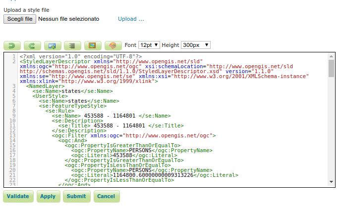Uploading style in GeoServer…¶
Click on guilabel:Apply.
Change to the Layer preview tab, click on the Preview on Layer link to choose
topp:statesto verify proper rendering.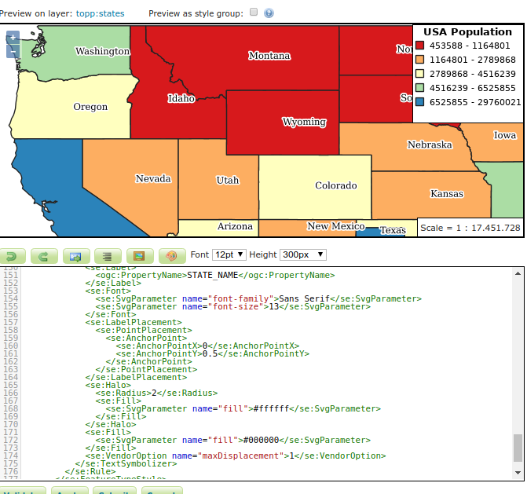Previewing style in GeoServer…¶
Eventually switch to the Publishing tab, search for
states, and select Default or Associated checkbox to publish the layer to use the new style permanently.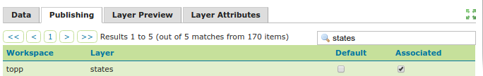Associating style in GeoServer…¶
Exporting raster symbology¶
The following are a couple of examples on how to export raster layers’ symbology in QGIS and how to use the resulting SLD to style layers in GeoServer.
Warning
As mentioned above, this functionality has some limitations:
Hillshading vendor options are not fully supported by GeoServer so you can’t choose the Band and the position of the sun (Altitude and Azimuth), the Multidirectional option is not supported too
GeoServer is not able to interpret the Color Rendering options yet
This is a step by step guide to style a GeoServer demo layer, sfdem.
Open QGIS (minimum version 3.4.5)
Load the
sfdem.tifraster from the GeoServer data directory,<GEOSERVER_DATA_DIR>/data/sf/sfdem.tifDouble click the layer to open the Properties dialog and switch to the Symbology page.
Choose a Singleband pseudocolor rendering, Generate Min / Max Value Settings using Mean +/- standard deviation with using
1.5standard deviations. Generate a 5 classes Linear interpolated map, as shown in figure.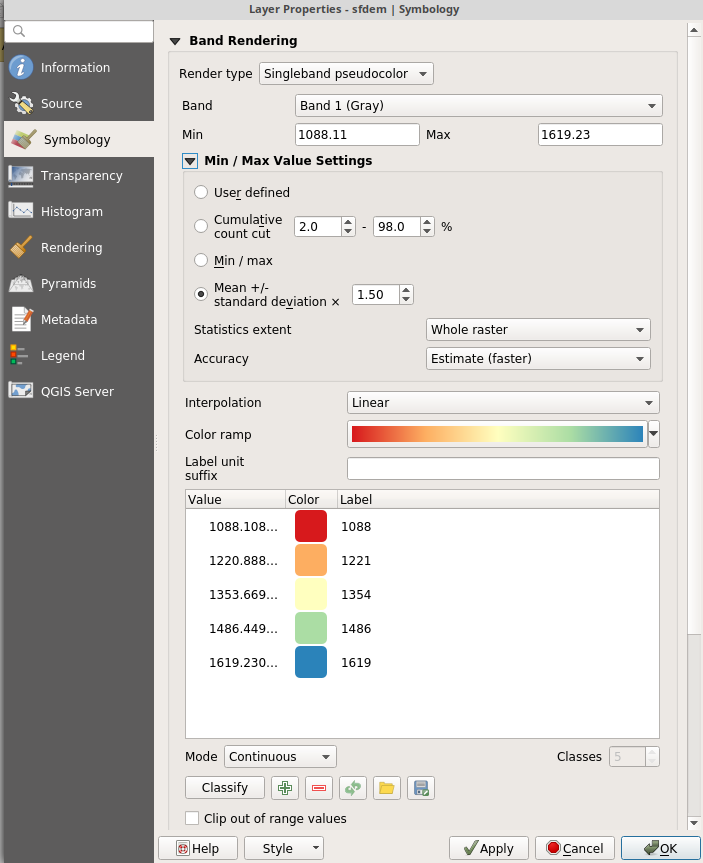QGIS raster styling¶
The layer renders as follows:
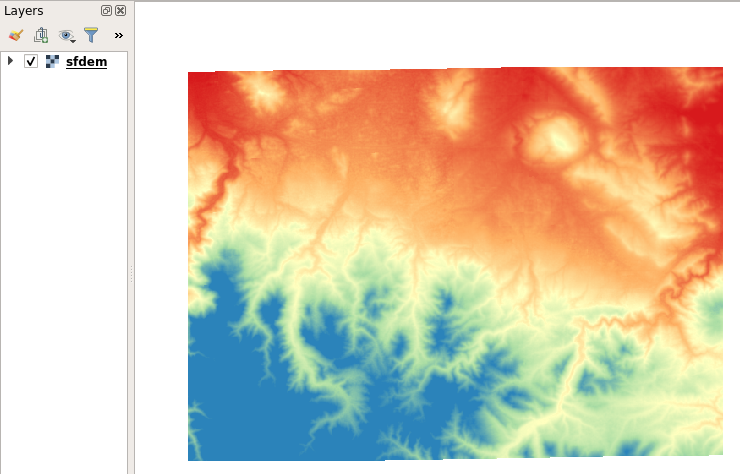QGIS raster styling¶
Return to the layer’s Properties dialog Symbology page, at the bottom of the page choose .
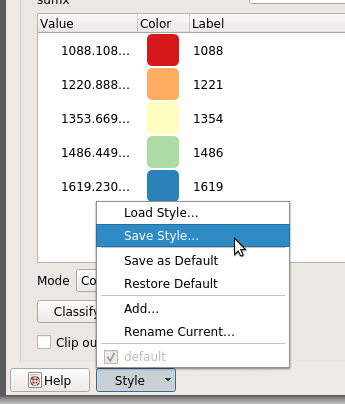Export using Save As…¶
Choose export in the SLD format, placing the file in the desired location
Choosing export format…¶
Go in GeoServer, create a new style, use the Upload a new style dialog to choose the exported file, and click on upload link.
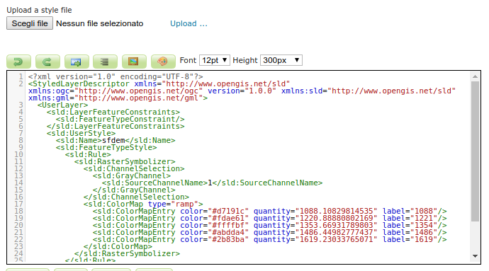Uploading style in GeoServer…¶
Click on guilabel:Apply then change to the Layer preview tab. Click on the Preview on Layer link to choose
sfdemto verify proper rendering.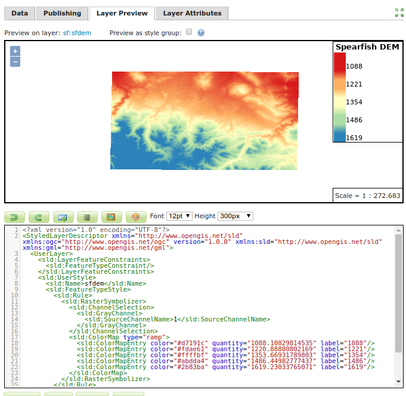Previewing style in GeoServer…¶
Finally switch to the Publishing tab, search for
sfdemlayer, and select Default or Associated checkbox to publishsfdemwith the new style.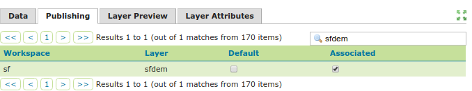Associating style in GeoServer…¶
The next example shows how to style an aerial image instead.
Download an aerial image (for example from USGS Landsat image archives) if you do not already have one. Give it a name (
aerialin this example) and save it as GeoTIFF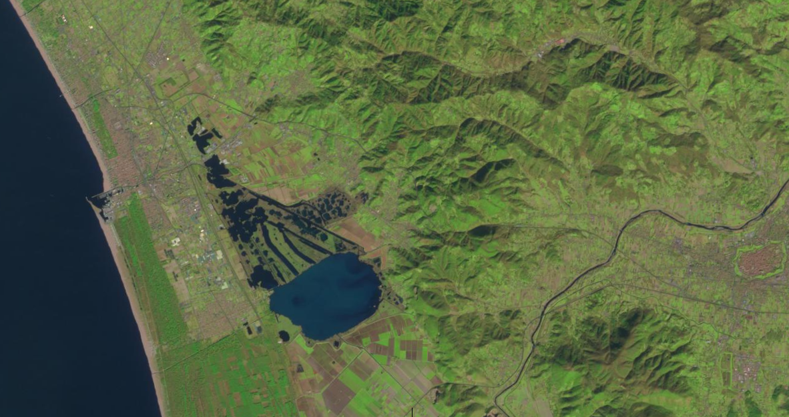aerial.tiff¶
Open GeoServer, create a new Store (see Add a Store), add a GeoTIFF Raster Data Source to the Store and connect it to your
aerial.tiffileIn GeoServer, create a new Layer (see Add a Layer) choosing the Store you have created in the previous step
Open QGIS (minimum version 3.4.5)
Load the
aerial.tifrasterDouble click the layer to open the Properties dialog and switch to the Symbology page
Choose a Multiband color rendering, set the bands (Red band == Band 1 (red), Green band == Band 2 (Green), Blue band == Band 3 (Blue)), generate Min / Max Value Settings using
5,0 - 95,0 % rangeof Cumulative count cut and selectStretch to MinMaxas Contrast enhancement option, as shown in the picture below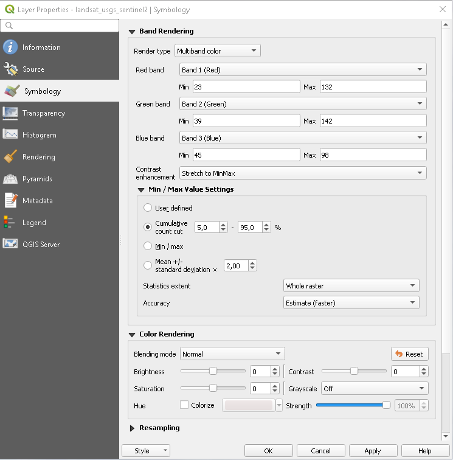QGIS layer properties - Symbology¶
The layer renders as follows:
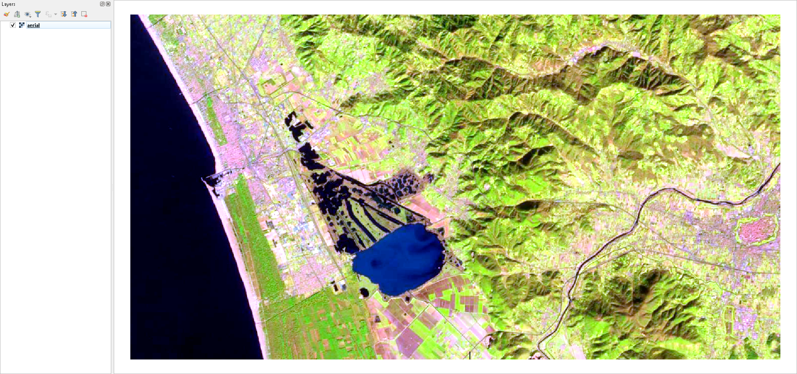QGIS layer rendering¶
Save the Style as SLD
Go in GeoServer, use the generated SLD to create a new style, choose the
aeriallayer through the Preview on Layer link and verify if the layer is properly rendered (see the previous example for further details)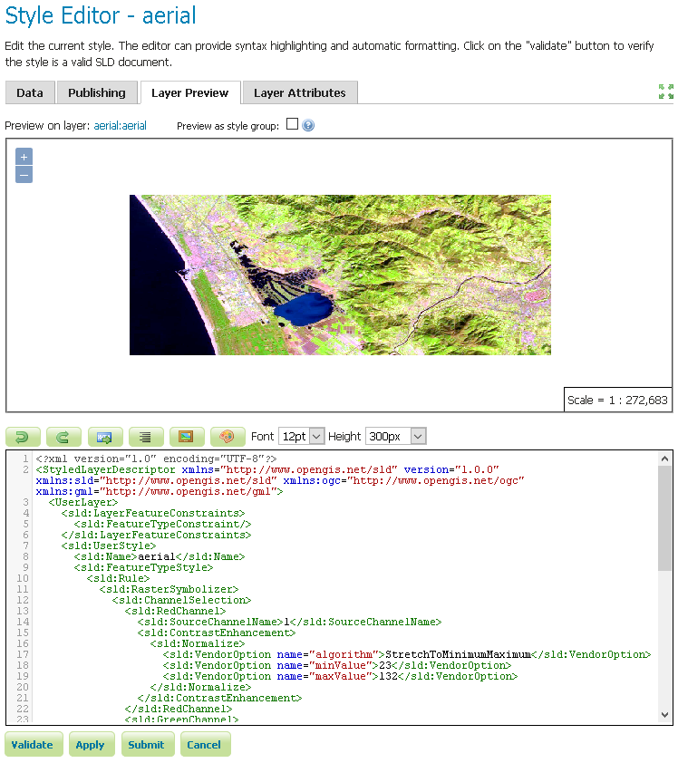GeoServer layer rendering¶
Finally Publish the
aeriallayer with the new style as described in the previous example.